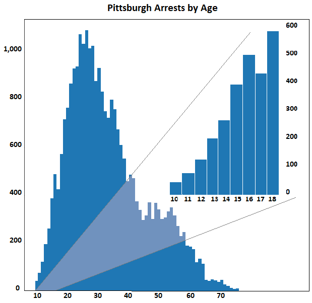
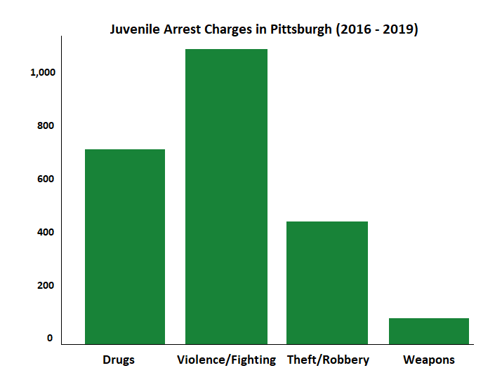
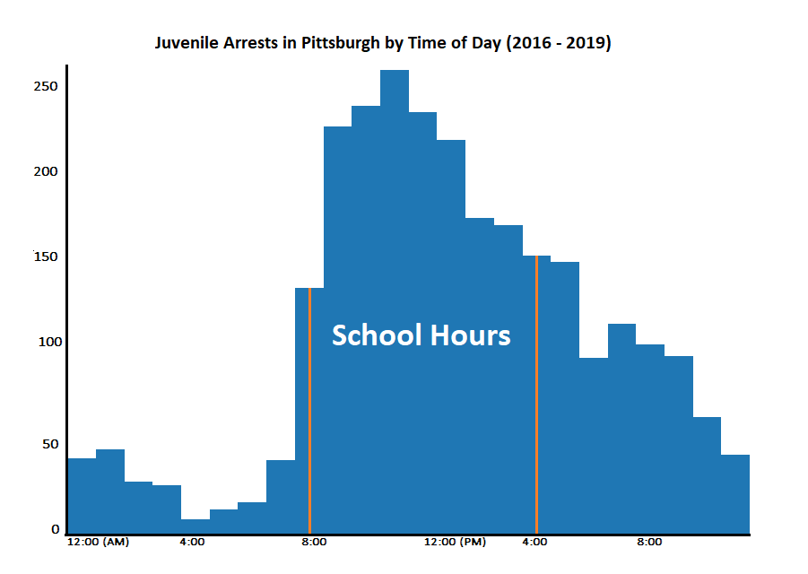

Between 2016 and today, just over 27,500 arrests have taken place under the jurisdiction of the Pittsburgh Police. Charges range from drunk driving and disorderly conduct to violent assault and armed robbery. The most frequently occuring charges (30% of all arrests) have to do with drugs--possession of marijuana, other controlled substances, paraphenalia, etc. Charges of assault, fighting and disorderly conduct occur in approximately 34% of arrests.
However, the most concerning percentage-statistic may very well be that nearly 10% of arrests (2,586 since 2016) in the City of Pittsburgh are of kids between 10 and 18 years old. In this report, I take a closer look at the data on juvenile arrests to try and paint a more robust picture of which kids are getting arrested, where, when and why. By breaking down and visualizing the data, we ultimately see a stark reality that highlights the need for drug and violence prevention at and around the City's schools.
In this first graphic, we see the overall age distribution among Pittsburgh arrests. It shows a steady increase, as one might expect, as we approach the mid-20's, in the number of arrests. The numbers for adolescents are also not very surprising, showing a marked increase once we move from elementary school to high school.
So what are these kids getting arrested for anyway?
The chart above clearly shows that the majority of juvenile arrests are taking place due to violent behavior, whether it be simple or aggravated assault, hazardous/physical offense, disorderly conduct or fighting. Could it be that these arrests have anything to do with fighting at or around school? To look into this, I charted the distribution of juvenile arrests by the time of day at which they occurred. What I found was that indeed, a vast majority of these arrests occurred during school hours between 8:00am and 4:00pm.
If most juvenile arrests are occurring during the school day, how do we know for sure that the issue at hand revolves around the schools themselves? Luckily, the Pittsburgh Police publish the location data for each individual event in the arrests dataset. Along with the location of Pittsburgh Public Schools, I mapped out the locations of all juvenile arrests in the dataset. The result (below) shows that in general, these arrests tend to occur closeby to schools.